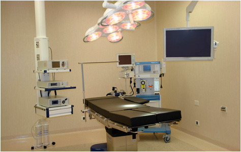
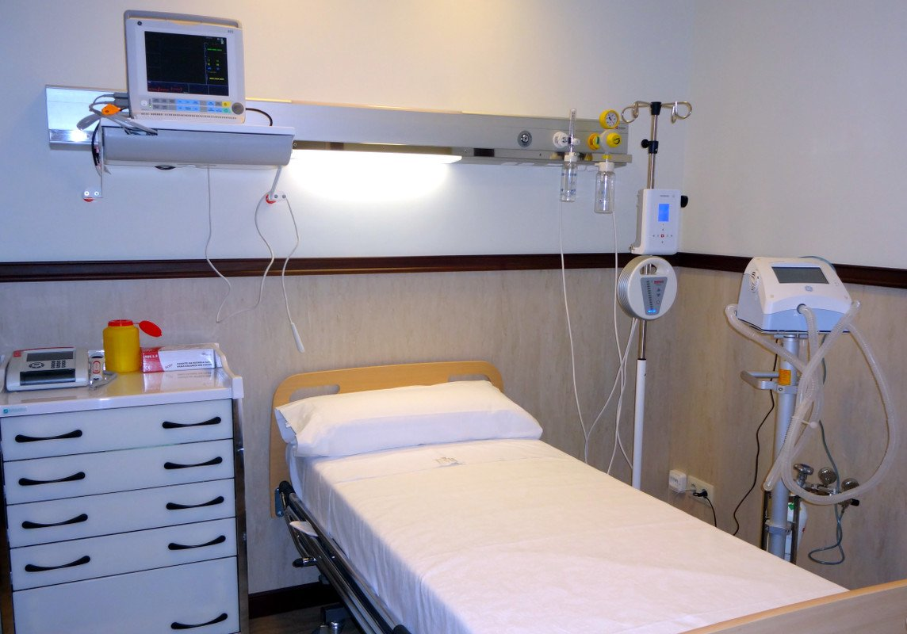
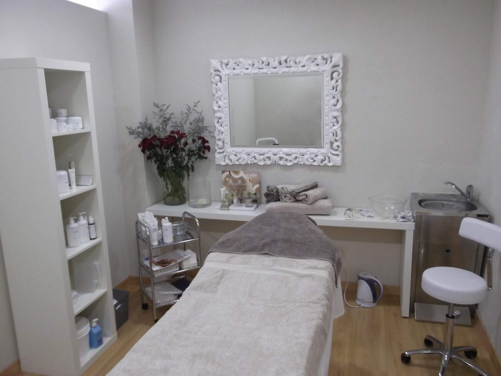

Quirofano
En nuestro servicio de cirugía contamos con tres quirófanos totalmente equipados con tecnología de última generación. Un ejemplo de ello es la presión positiva de aire, la cual permite que el sector se encuentre permanentemente esterilizado ya que realiza un filtrado absoluto, cumpliendo con los más altos estándares de seguridad e higiene.

Sala de Recuperacion
A su vez, contamos con cinco habitaciones privadas con vistas de la ciudad y salas especialmente equipadas para su comodidad y la de sus acompañantes. Es un servicio pensado para su seguridad y tranquilidad, con profesionales altamente capacitados, con la seriedad y calidez de siempre.

Sala de tratamientos esteticos
Estos tratamientos integran todas las técnicas de la estética para proporcionarle confort y relajación, aportándole a su piel hidratación y luminosidad.
Mesoterapia revitalizante en rostro, cuello y escote, Peeling químico facial de grado medio, Bótox, Radiofrecuencia en cara y brazos.